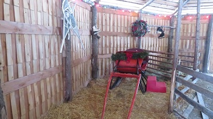

Visit the reindeer
We will be opening for visits during the holiday season but with protocols to keep everyone safe and healthy, including limiting all visits to 50 people maximum. Unlike last year, you must schedule your visit to ensure we stay below 50 visitors at a time. We will donate 10% of each admission ticket from November 27 to December 24 to Foodlink.
Learn more about visiting the reindeer, and book online now!
Hire the reindeer for your event
 Little Buddy leading the way!
Little Buddy leading the way!
- Businesses
- Winter Festivals
- Christmas tree farms
- Tree lighting ceremonies
- Private photography sessions (with your photographer)
- Parades
- Two hours: $2000
- Three hours: $2500
- Four hours: $3000
Sleigh rental with reindeer: add $500 to above cost (just for photos: the reindeer will not be hitched to it)
Photo shoot on-site at Shortsville Reindeer Farm: $200 per hour (one hour minimum)
Rates for events outside a 30 mile radius will be determined on a case by case basis.
 Moose showing off in public
Moose showing off in public

Our sleigh